Validated third-party solutions
Validated third-party solutions
StorageGRID best practices for deployment with Veeam Backup and Replication
 Suggest changes
Suggest changes
This guide focuses on the configuration of NetApp StorageGRID and partly Veeam Backup and Replication. This paper is written for storage and network administrators who are familiar with Linux systems and tasked with maintaining or implementing a NetApp StorageGRID system in combination with Veeam Backup and Replication.
Overview
Storage Administrators are looking to manage the growth of their data with solutions that will meet the availability, rapid recovery goals, scale to meet their needs and automate their policy for long-term retention of data. These solutions should also provide protection from loss or malicious attacks. Together, Veeam and NetApp have partnered to create a data protection solution combining Veeam Backup & Recovery with NetApp StorageGRID for on-premises object storage.
Veeam and NetApp StorageGRID provide an easy-to-use solution that work together to help meet the demands of rapid data growth and increasing regulations around the world. Cloud-based object storage is known for its resilience, ability to scale, operational and cost efficiencies that make it a natural choice as a target for your backups. This document will provide guidance and recommendations for the configuration of your Veeam Backup solution and StorageGRID system.
The object workload from Veeam creates a large number of concurrent PUT, DELETE, and LIST operations of small objects. Enabling immutability will add to the number of requests to the object store for setting retention and listing versions. The process of a backup job includes writing objects for the daily change then after the new writes are complete the job will delete any objects based on the retention policy of the backup. The scheduling of backup jobs will almost always overlap. This overlap will result in a large portion of the backup window consisting of 50/50 PUT/DELETE workload on the object store. Making adjustments in Veeam to the number of concurrent operations with the task slot setting, increasing the object size by increasing the backup job block size, reducing the number of objects in the multi-object delete requests, and choosing the maximum time window for the jobs to complete will optimize the solution for performance and cost.
Make sure to read the product documentation for Veeam Backup and Replication and StorageGRID before you begin. Veeam provides calculators for understanding the sizing of the Veeam infrastructure and capacity requirements that should be used prior to sizing your StorageGRID solution. Please always check the Veeam-NetApp validated configurations at the Veeam Ready Program website for Veeam Ready Object, Object Immutability, and Repository.
Veeam configuration
Recommended version
It is always recommended to stay current and apply the latest hotfixes for your Veeam Backup & Replication 12 system. Currently we recommend at a minimum installing Veeam patch P20230718.
S3 Repository configuration
A scale-out backup repository (SOBR) is the capacity tier of S3 object storage. The capacity tier is an extension of the primary repository providing longer data retention periods and a lower cost storage solution. Veeam offers the ability to provide immutability through the S3 Object Lock API. Veeam 12 can use multiple buckets in a scale out repository. StorageGRID does not have a limit for the number of objects or capacity in a single bucket. Using multiple buckets may improve performance when backing up very large datasets where the backup data could get to petabyte scale in objects.
Limiting concurrent tasks may be required depending on the sizing of your specific solution and requirements. The default settings specify one repository task slot for each CPU core and for each task slot a concurrent task slot limit of 64. For example if your server has 2 CPU cores a total of 128 concurrent threads will be used for the object store. This is inclusive of PUT, GET, and batch Delete. It is recommended to select a conservative limit to the task slots to start with and tune this value once Veeam backups have reached a steady state of new backups and expiring backup data. Please work with your NetApp account team to size the StorageGRID system appropriately to meet the desired time windows and performance. Adjusting the number of task slots and the limit of tasks per slot may be required to provide the optimal solution.
Backup job configuration
Veeam backup jobs can be configured with different block size options that should be considered carefully. The default block size is 1MB and with the storage efficiencies Veeam provides with compression and deduplication creates object sizes of approximately 500kB for the initial Full backup and 100-200kB objects for the incremental jobs. We can greatly increase performance and scale down the requirements for the object store by choosing a larger backup block size. Though the larger block size makes great improvements in the object store performance it comes at the cost of potentially increased primary storage capacity requirement due to reduced storage efficiency performance. It is recommended for the backup jobs to be configured with a 4MB block size which creates approximately 2MB objects for the full backups and 700kB-1MB object sizes for incrementals. Customers may consider even configuring backup jobs using 8 MB block size, which can be enabled with assistance from Veeam support.
The implementation of immutable backups makes use of S3 Object Lock on the object store. The immutability option generates an increased number of requests to the object store for listing and retention updates on the objects.
As backup retentions expire the backup jobs will process the deletion of objects. Veeam sends the delete requests to the object store in multi-object delete requests of 1000 objects per request. For small solutions this may need to be adjusted to reduce the number of objects per request. Lowering this value will have the added benefit of more evenly distributing the delete requests across the nodes in the StorageGRID system. It is recommended to use the values in the table below as a starting point in configuring the multi object delete limit. Multiply the value in the table by the number of nodes for the chosen appliance type to get the value for the setting in Veeam. If this value is equal to or greater than 1000 there is no need to adjust the default value. If this value needs to be adjusted, please work with Veeam support to make the change.
| Appliance Model | S3MultiObjectDeleteLimit per node |
|---|---|
SG5712 |
34 |
SG5760 |
75 |
SG6060 |
200 |

|
Please work with your NetApp Account team for the recommended configuration based on your specific needs. The Veeam configuration settings recommendations will include:
|
StorageGRID configuration
Recommended version
NetApp StorageGRID 11.6 or 11.7 with the latest hotfix are the recommended versions for Veeam deployments. Many optimization features were introduced in the StorageGRID 11.6.0.11 and 11.7.0.4 which will be beneficial to Veeam workloads. It is always recommended to stay current and apply the latest hotfixes for your StorageGRID system.
Load balancer and S3 endpoint configuration
Veeam requires the endpoint to be connected via HTTPS only. A non-encrypted connection is not supported by Veeam. The SSL certificate can be a self-signed certificate, private trusted certificate authority, or public trusted certificate authority. To ensure continuous access to the S3 repository it is recommended to use at least two load balancers in an HA configuration. The load balancers can be a StorageGRID provided integrated load balancer service located on every admin node and gateway node or third-party solution such as F5, Kemp, HAproxy, Loadbalanacer.org, etc. Using a StorageGRID load balancer will provide the ability to set traffic classifiers (QoS rules) that can prioritize the Veeam workload, or limit Veeam to not impact higher priority workloads on the StorageGRID system.
S3 Bucket
StorageGRID is a secure multi-tenant storage system. It is recommended to create a dedicated tenant for the Veeam workload. A storage quota can be optionally assigned. As a best practice enable “use own identity source”. Secure the tenant root management user with an appropriate password. Veeam Backup 12 requires strong consistency for S3 buckets. StorageGRID offers multiple consistency options configured at the bucket level. For multi-site deployments with Veeam accessing the data from multiple locations, select “strong-global”. If Veeam backups and restores happen at a single site only, consistency level should be set to “strong-site”. For more information on bucket consistency levels please review the documentation. To use StorageGRID for Veeam immutability backups, S3 Object Lock must be enabled globally and configured on the bucket during the bucket creation.
Lifecycle management
StorageGRID supports replication and erasure coding for object level protection across StorageGRID nodes and sites. Erasure Coding requires at least a 200kB object size. The default block size for Veeam of 1MB produces object sizes that can often be below this 200kB recommended minimum size after Veeam's storage efficiencies. For the performance of the solution, it is not recommended to use an erasure coding profile spanning multiple sites unless the connectivity between the sites is sufficient to not add latency or restrict the bandwidth of the StorageGRID system. In a multi-site StorageGRID system the ILM rule can be configured to store a single copy at each site. For ultimate durability a rule could be configured to store an erasure coded copy at each site. Using two copies local to the Veeam Backup servers is the most recommended implementation for this workload.
Implementation key points
StorageGRID
Ensure Object Lock is enabled on the StorageGRID system if immutability is required. Find the option in the management UI under Configuration/S3 Object Lock.
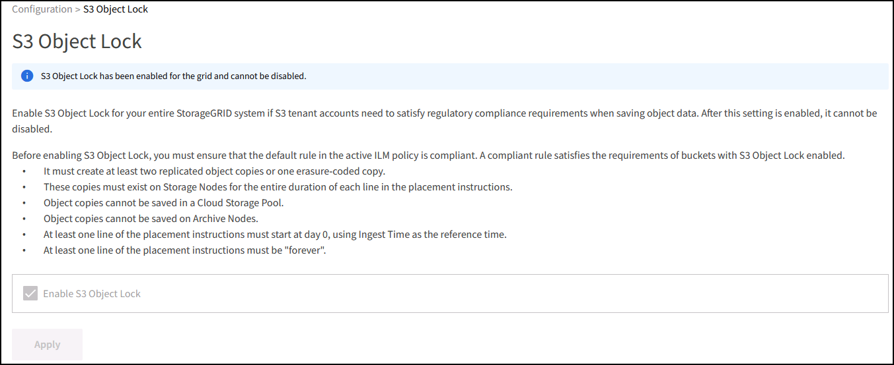
When creating the bucket, select “Enable S3 Object Lock” if this bucket is to be used for immutability backups. This will automatically enable bucket versioning. Leave default retention disabled as Veeam will set object retention explicitly. Versioning and S3 Object Lock should not be selected if Veeam isn't creating immutable backups.
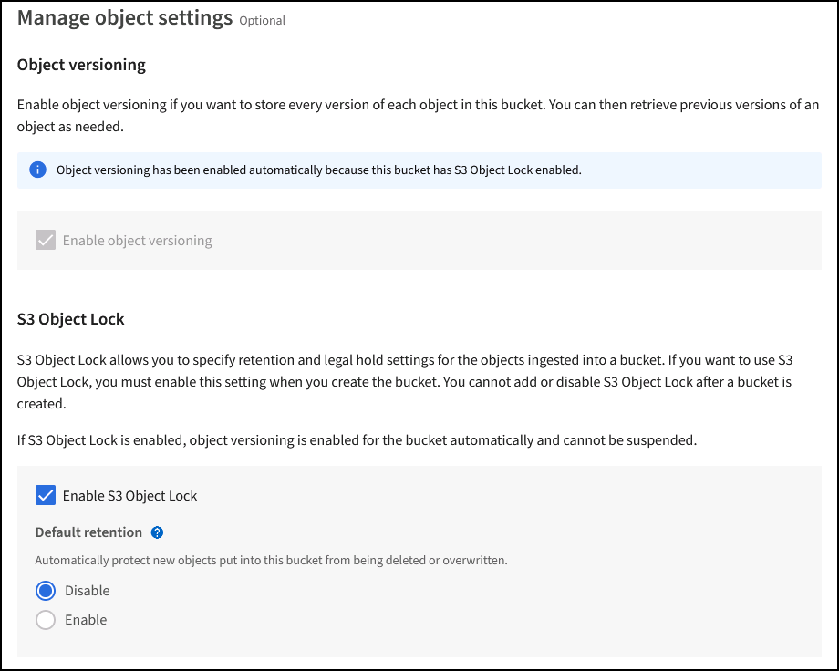
Once the bucket is created go to the details page of the bucket created. Select the consistency level.
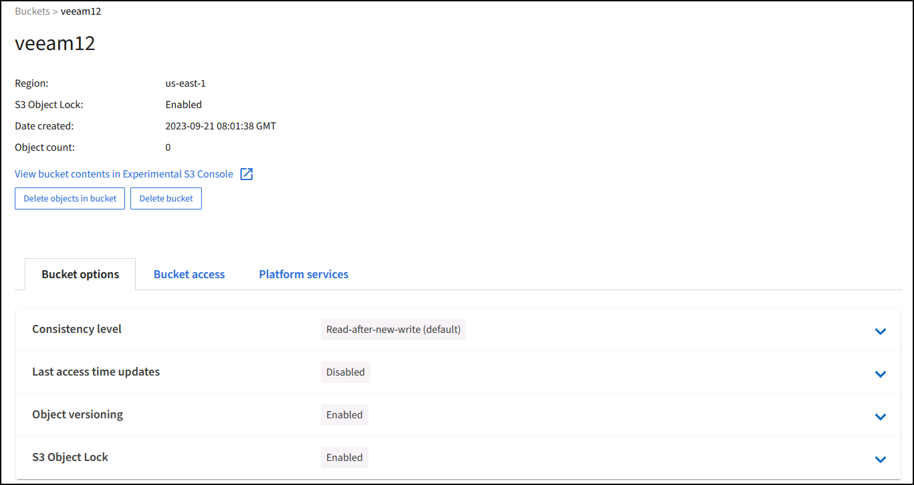
Veeam requires strong consistency for S3 buckets. So, for multi-site deployments with Veeam accessing the data from multiple locations, select “strong-global”. If Veeam backups and restores happen at a single site only, consistency level should be set to “strong-site”. Save the changes.
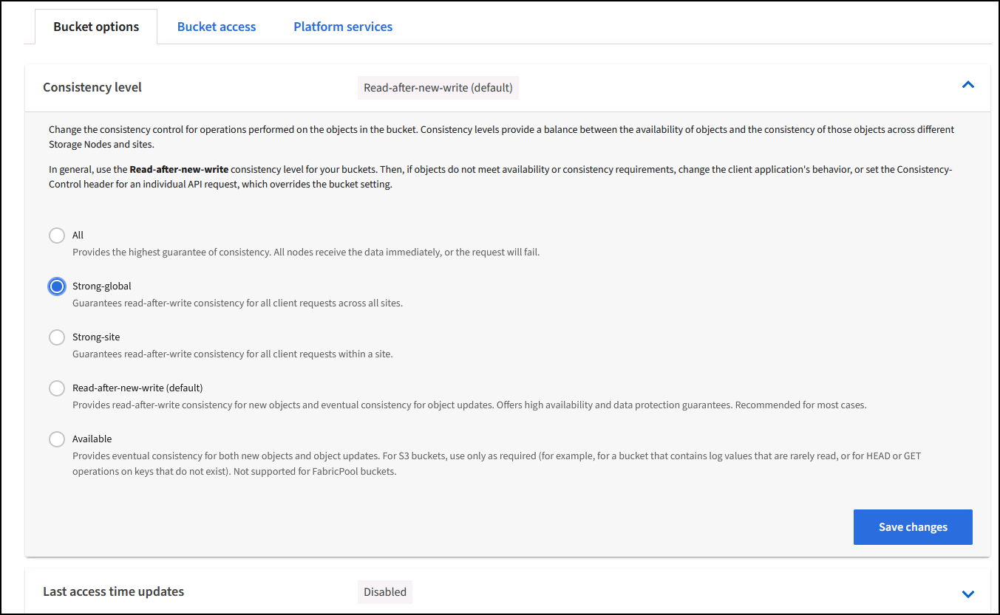
StorageGRID provides an integrated load balancer service on every admin node and dedicated gateway nodes. One of the many advantages of using this load balancer is the ability to configure Traffic Classification Policies (QoS). Though these are mainly used for limiting an applications impact on other client workloads or prioritizing a workload over others, they also provide a bonus of additional metrics collection to assist in monitoring.
In the configuration tab, select “Traffic Classification” and create a new policy. Name the rule and select either the bucket(s) or tenant as the type. Enter the name(s) of the bucket(s) or tenant. If QoS is required, set a limit, but for most implementations, we just want to add the monitoring benefits this provides so do not set a limit.
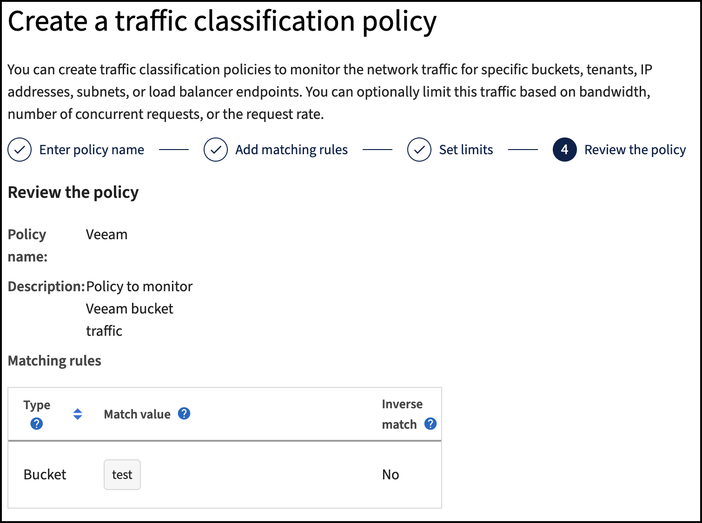
Veeam
Depending on the model and quantity of StorageGRID appliances it may be necessary to select and configure a limit to the number of concurrent operations on the bucket.
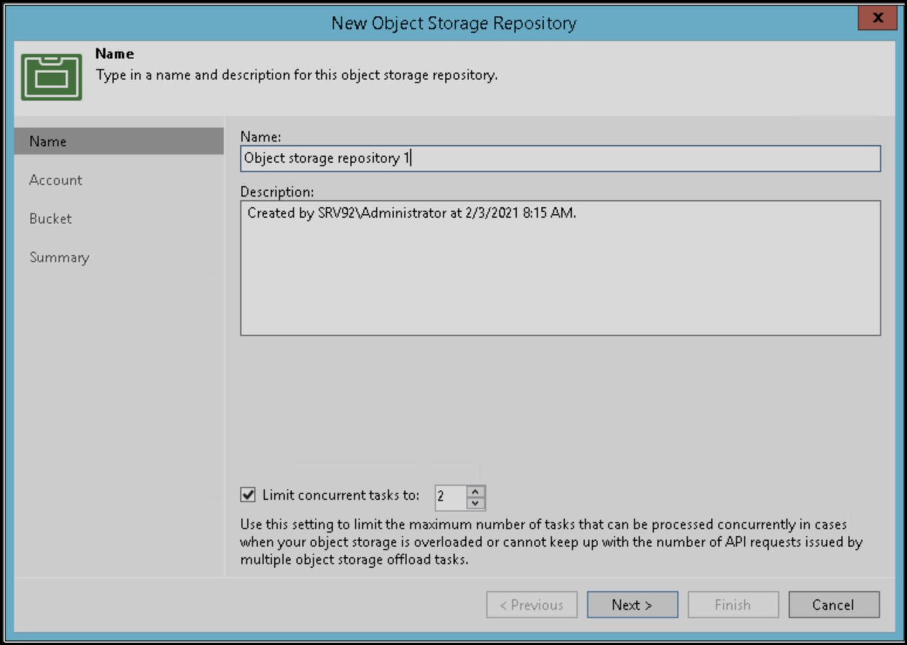
Follow the Veeam documentation on backup job configuration in the Veeam console to start the wizard. After adding VMs select the SOBR repository.
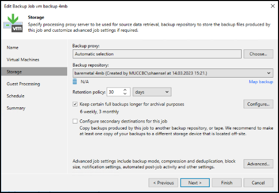
Click Advanced settings and change storage optimization settings to 4 MB or larger. Compression and deduplication shall be enabled. Change guest settings according to your requirements and configure the backup job schedule.
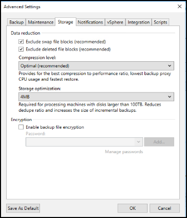
Monitoring StorageGRID
To get the full picture of how Veeam and StorageGRID are performing together you will need to wait until the retention time of the first backups have expired. Up until this point the Veeam workload consists primarily of PUT operations and no DELETEs have occurred. Once there is backup data expiring and cleanups are occurring you can now see the full consistent usage in the object store and adjust the settings in Veeam if needed.
StorageGRID provides convenient charts to monitor the operation of the system located in the Support tab Metrics page. The primary dashboards to look at will be the S3 Overview, ILM, and Traffic Classification Policy if a policy was created. In the S3 Overview dashboard you will find information on the S3 operation rates, latencies, and request responses.
Looking at the S3 rates and active requests you can see how much of the load each node is handling and the overall number of requests by type. 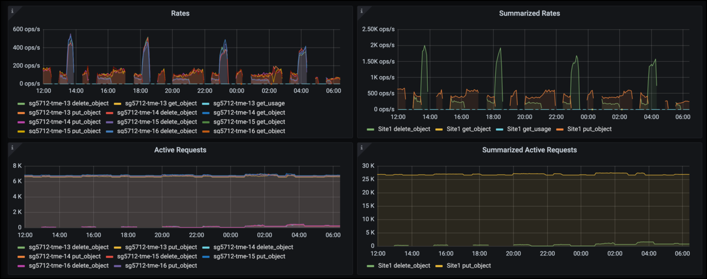
The Average Duration chart shows the average time each node is taking for each request type. This is the average latency of the request and may be a good indicator that additional tuning may be required, or there is room for the StorageGRID system to take on more load.
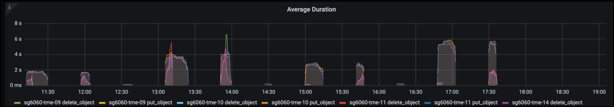
In the Total Completed Requests chart, you can see the requests by type and response codes. If you see responses other than 200 (Ok) for the responses this may indicate an issue like the StorageGRID system is getting heavily loaded sending 503 (Slow Down) responses and some additional tuning may be necessary, or the time has come to expand the system for the increased load.
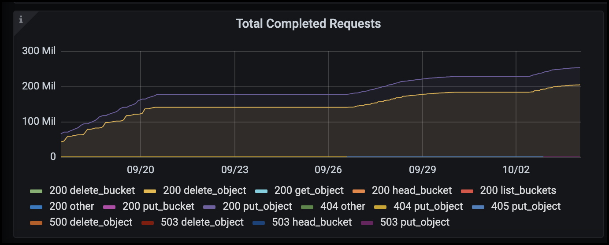
In the ILM Dashboard you can monitor the Delete performance of your StorageGRID system. StorageGRID uses a combination of synchronous and asynchronous deletes on each node to try and optimize the overall performance for all requests.
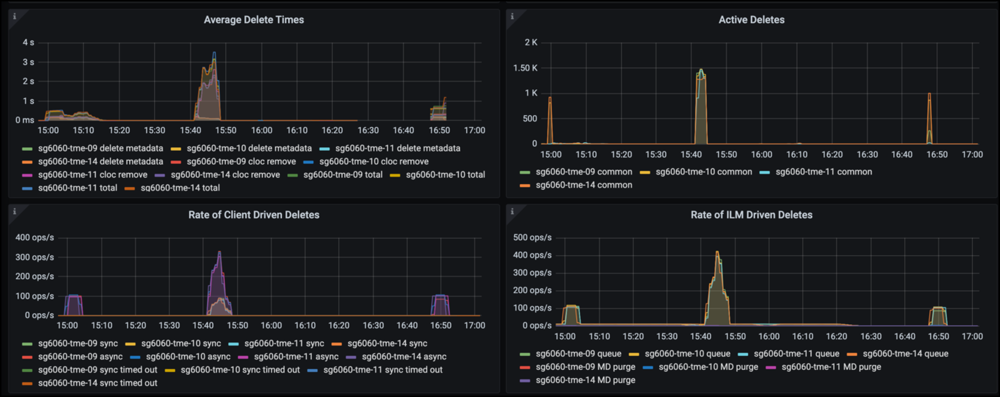
With a Traffic Classification Policy, we can view metrics on the load balancer Request throughput, rates, duration, as well as the object sizes Veeam is sending and receiving.
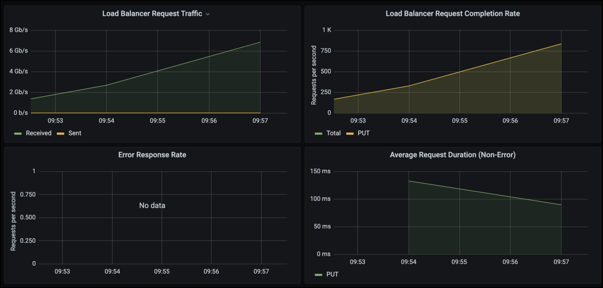
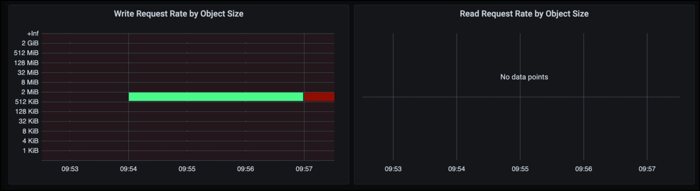
Where to find additional information
To learn more about the information that is described in this document, review the following documents and/or websites:
By Oliver Haensel and Aron Klein